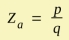
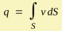
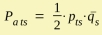
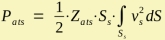
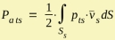
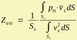

Radiation Impedance - General
| Home |
The radiation impedance is an engineering construct which helps to couple multiple individual systems. In AKABAK it is used to couple the boundary element to the lumped element part. In the lumped element network we define a Radiator, Vented Enclosure or Speaker for vibrating boundaries. The BEM-part is then feeding this component with the spectrum of the acoustic radiation impedance. Eventually the lumped element network is solved and driving velocities for the BEM-part can be calculated. See also paper [9].
Specific Radiation Impedance
In general we define the Specific Radiation Impedance:
Zs = p/v
Basically Zs is a field-parameter. p is the sound pressure and v is the acoustic velocity at a certain point in space. The unit of [Zs] = Pa·s/m. Further, of course, we need to define the direction because v is a vector and also whether p and v are at the same location or are at distinct locations. In the first case we speak of self radiation impedance, and if source and receiver are separated then it is called mutual radiation impedance.
For linear systems the radiation impedance is independent of the driving level. Because of this the specific radiation impedance is often used to characterize acoustic materials and structures, such as damping material and reflectors. See for example at Impedance of Meshes. Another example is the ratio of pressure and velocity of a free traveling plane wave, which is:
Z0s = ρ·c
with ρ density of air and c speed of sound.
Acoustic Radiation Impedance
The concept of the radiation impedance is used to couple the lumped element network to the realm of free radiation. In the world of lumped element analysis we work with mean-values or power-derived values. The acoustic radiation impedance is meant to be a mean value over an area. The area involved can be of a diaphragm or the cross-section of an aperture. Hence, in Akabak, we define an acoustic lumped component which represents radiation. This Radiator implements an acoustic radiation impedance for a vibrating boundary. If there are multiple groups of such boundaries AKABAK implements also the mutual acoustic radiation impedance components.
We define the acoustic radiation impedance:
 |
with |  |
p is the mean value of the sound pressure over an area S. q is the volume velocity which typically is calculated using the same area. The unit of [Za] = Pa·s/m3. The equivalent specific impedance is Zs = Za·S
The mean-value approach has disadvantages because there are applications where the velocity integral can become zero. Here we use alternatively the acoustic power approach in order to get a mean-value. Assuming lumped parameters of sound pressure and volume velocity the "lumped" acoustic power is:

The factor 1/2 stems from the crest-factor of the sinoidal signal. The bar indicates conjugate complex. The indices t and s indicate the source and the receiver. If t=s then it is a self impedance otherwise a mutual impedance where p is the sound pressure at receiver s generated by source t.
Inserting above equations yields:

Here v2 means the absolute of v squared. It is interesting to note that this equation demonstrates that the acoustic power is proportional to the acoustic radiation impedance.
Inside AKABAK the above equation is an intermediate step in order to calculate Za. For this the BEM-part can provide the sound pressure distribution. On the other hand, the distribution of velocities is typically specified. Hence, we can calculate the acoustic power from source t to receiver s:

Finally, by equating the lumped and the distributed formulae:

This formulation is arithmically more stable because we have in the denominator the absolute squared of the velocity, which integral does not go to zero.
Mechanical Equivalent of Radiation Impedance
In general the mechanic impedance is defined by Zm = Potential/Flow, which becomes in the Impedance Analogy: Zimp m = F/v and in the Mobility Analogy: Zmob m = v/F
A mechanic transducer would "see" the equivalent of the acoustic radiation impedance which is
| Zimp ma = Za·S2 | Zmob ma = 1/(Za·S2) |
Mass Load
A common example of the application of mechanic equivalent of the radiation impedance is the loudspeaker. At low frequencies the radiation resistance may be very low. However, the radiation reactance provides typically a significant amount of mass-load which is part of the total vibrating mass of the diaphragm. In Impedance Analogy we define the impedance of a mechanic mass as: Zimp m = jωM. Hence, the equivalent mass of the acoustic reactance is approximately Mr = Xa·S2/ω. In general the mass-load Mr is frequency dependent. However, for circular membranes the reactance is rising linearly with frequency which results in a fairly constant value for Mr. AKABAK provides an observation function which is dedicated to it. Open the observation form Radiation Impedance and check the check-box Calc Mass together with Domain=Mechanic. The result is a curve which displays Mr(f) in units kg.
End Corrections
If a duct or waveguide radiates into free space or into a larger confinement then measurement of its response functions make it look like as if the duct appears longer than its geometric length. This is so because the widening causes diffraction and reflection which can be described with the help of the concept of the radiation impedance. We picture the end of the duct wired to a radiation impedance. The radiation resistance yields an increase of damping because energy is transferred away from the duct. The radiation reactance can be regarded as an acoustic mass which value is Ma = Xa/ω. Ma can be observed via the form of observation of the Radiation Impedance. There check Calc Mass together with Domain=Acoustic. The result is a curve which displays Ma(f) in units kg/m4. Once we have the acoustic mass we can express Ma as an equivalent stub of duct which acoustically adds to the geometric duct. Or in other words the effective length of the duct is its geometric length plus some end-correction due to mass-loading. At low frequencies and for a first approximation a duct can be regarded as an acoustic mass which value is Ma = ρ·L/S. If we know the radiation reactance Xa then the end-correction L = Xa/ω·S/ρ or L = Ma·S/ρ
Notes
For uniform velocity distribution the power-formula becomes
Pa ts = 1/2·Za ts·vs2·Ss2
Hence, for free radiation and for the self-impedance (s=t) we have the relation that the larger the real part of Za the higher the acoustic output of the loudspeaker.
For internal acoustics we often observe a high value of the real part of Za at enclosure modes. The attenuation of the mode-peak indicates the amount of damping.
The mutual cases of Pa ts represent the acoustic energy exchange between diaphragms.
The imaginary part of Za is called reactance Xa. The reactance is related to blind energy (the one which potentially goes into resonance). If it is positive then we have an acoustic mass. If Xa is negative then it represents an acoustic stiffness.
 The diagram displays the normalized radiation impedance
of a diaphragm of dD=2in in an infinite baffle (one side).
With this diameter the wave-number-factor k·r = 1 at f = 2150 Hz.
The diagram displays the normalized radiation impedance
of a diaphragm of dD=2in in an infinite baffle (one side).
With this diameter the wave-number-factor k·r = 1 at f = 2150 Hz.
The red curve is of a piston, the blue of a concave shaped dome and the green of a convex shaped dome. At high frequencies all curves converge to a value of one, which corresponds to Z0a = ρ·c/S. At very low frequency the radiation impedance goes to zero. At mid-band the wavelength is comparable to the dimension of the radiator. Here the radiation impedance typically displays its most interesting features. The shape of the curves depend on the geometry and surface vibration of the diaphragm and on the radiation environment.
The real-part or resistance, which belongs to the piston (red) quickly raises without too much of an overshot. Its imaginary part is mass-like over the whole of the frequency band.
The curves belonging to the convex shaped diaphragm (green) are similar to those of the piston, however it typically features a more smooth transition band of the real-part.
The concave shaped diaphragm typically features the strongest overshot of the real part (blue). Remember that the acoustic power is proportional to the real-part. The imaginary part features frequency bands, where it becomes negative. This indicates a spring type radiation reactance caused by the cavity, which is formed by the inverse dome or by the cone. If the depth of the diaphragm is enlarged, it would finally converge to a horn and then to a duct. In this case the ripples of the radiation impedance would correspond to the standing waves within the pipe, and would be more pronounced.